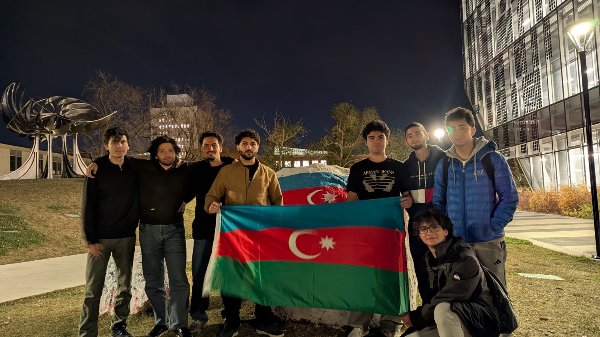

DATA 221 · Data analysis
Small-business financing in Canada
I combined lending tables and built metrics to compare franchise and non-franchise businesses.
University of Calgary · BSc Data Science
I use Python, R, and SQL to analyze data and explain what it shows. I’m interested in machine learning and mathematical optimization.
DATA 221 · Data analysis
I combined lending tables and built metrics to compare franchise and non-franchise businesses.
DATA 482 · In progress
2024–25
I’m using SQLite and Python to investigate when and where incidents were reported.
CPSC 383 · Design proposal
I designed a system that combines a classifier, explicit warning rules, and human review to flag suspicious rental listings.
May – August 2026
Provided technical support, troubleshot devices, and helped with software setup and maintenance.
August 2026 – present
Lead chapter operations, student engagement, and cultural initiatives at UCalgary.
Community involvement is an important part of my university experience.

As President of the UCalgary chapter of the Azerbaijani Students’ Association, I help lead chapter operations, student engagement, and cultural initiatives.
Through my roles as a Science Mentor and CCPD Front Desk Peer Helper, I support students and help connect them with campus resources.
I contribute to marketing and outreach with the European Cultural Society of Calgary, and previously served as Vice President of the Irish Students’ Association.